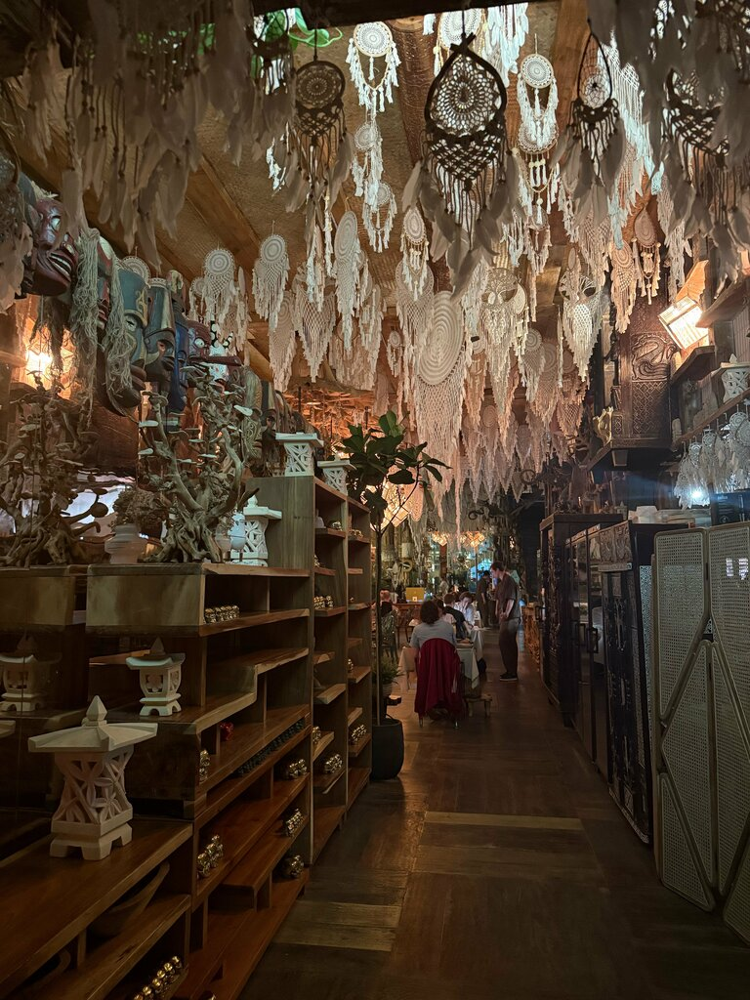
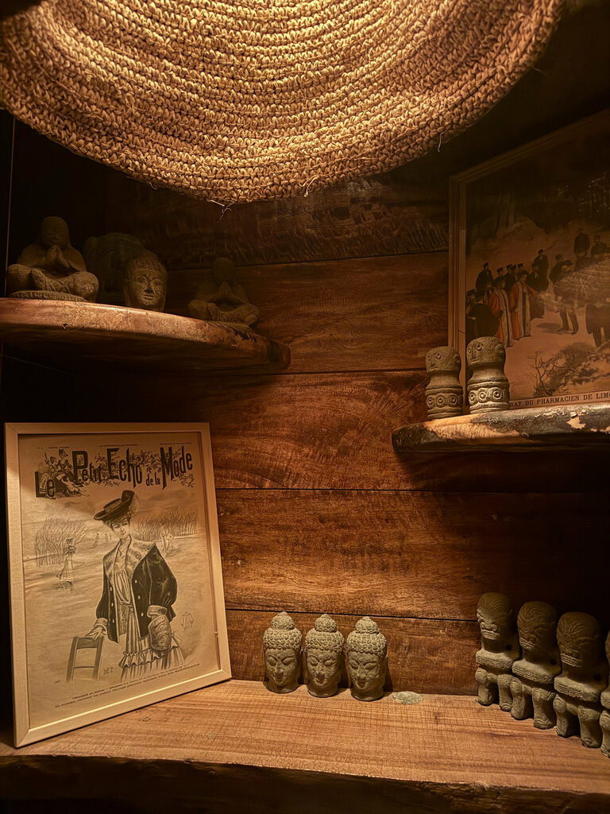
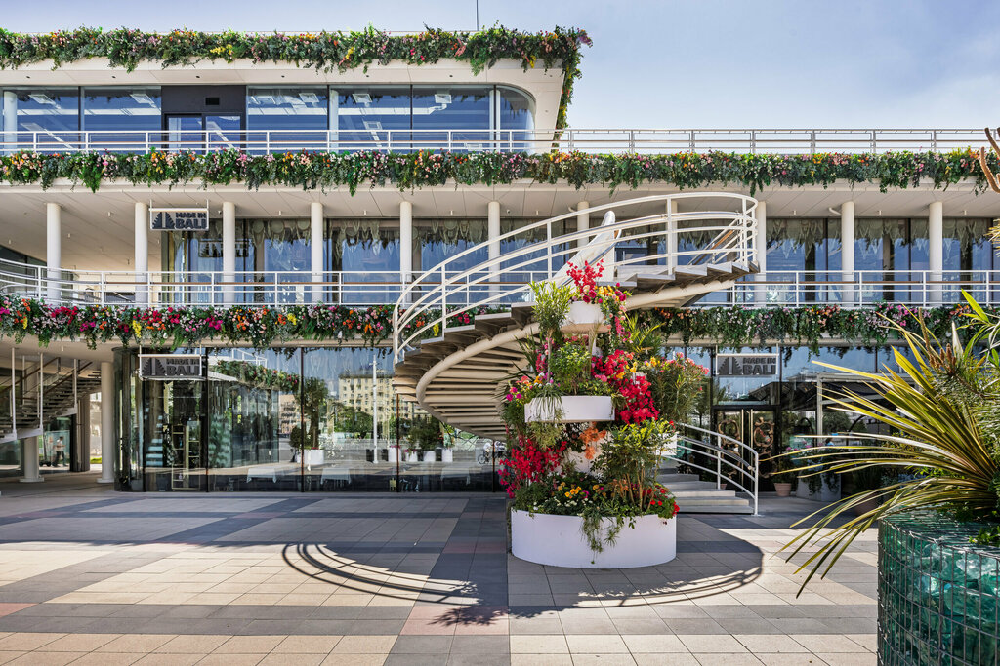
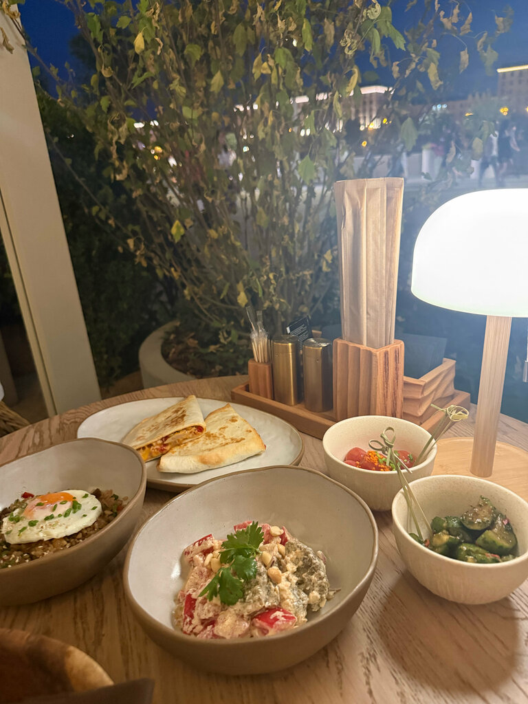
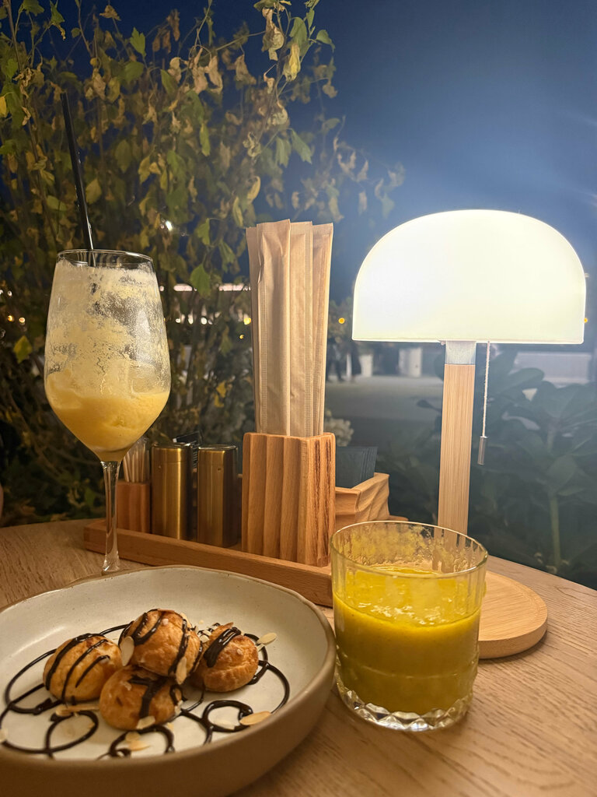
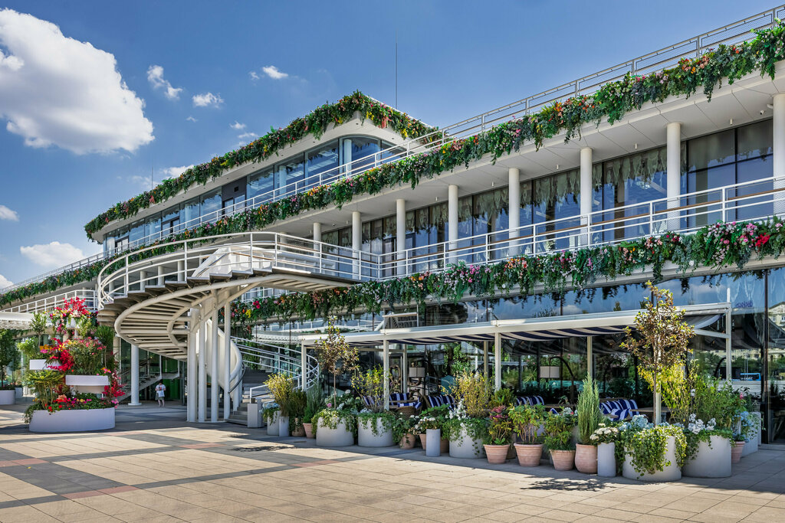
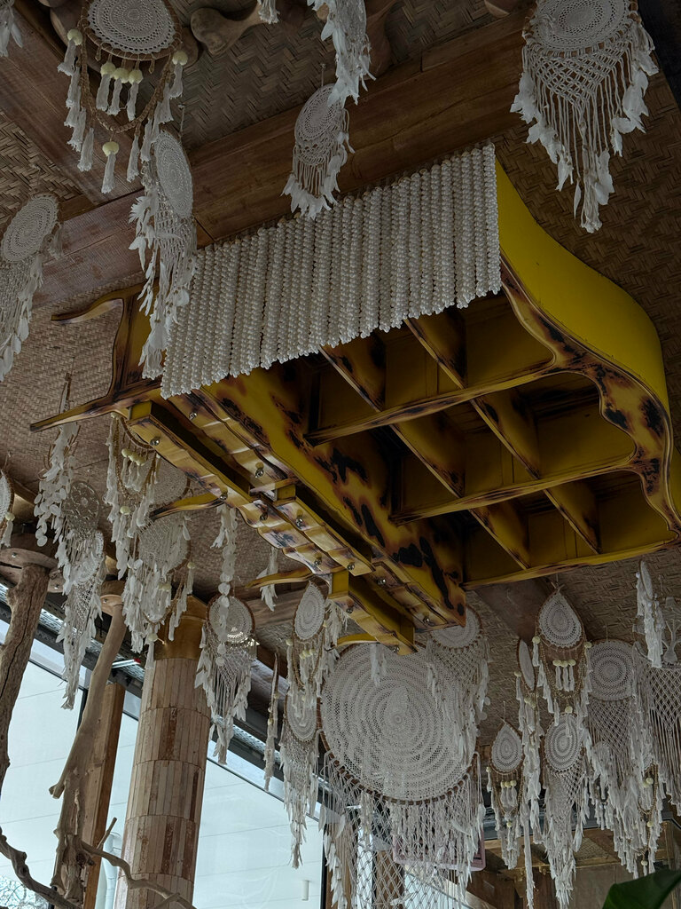
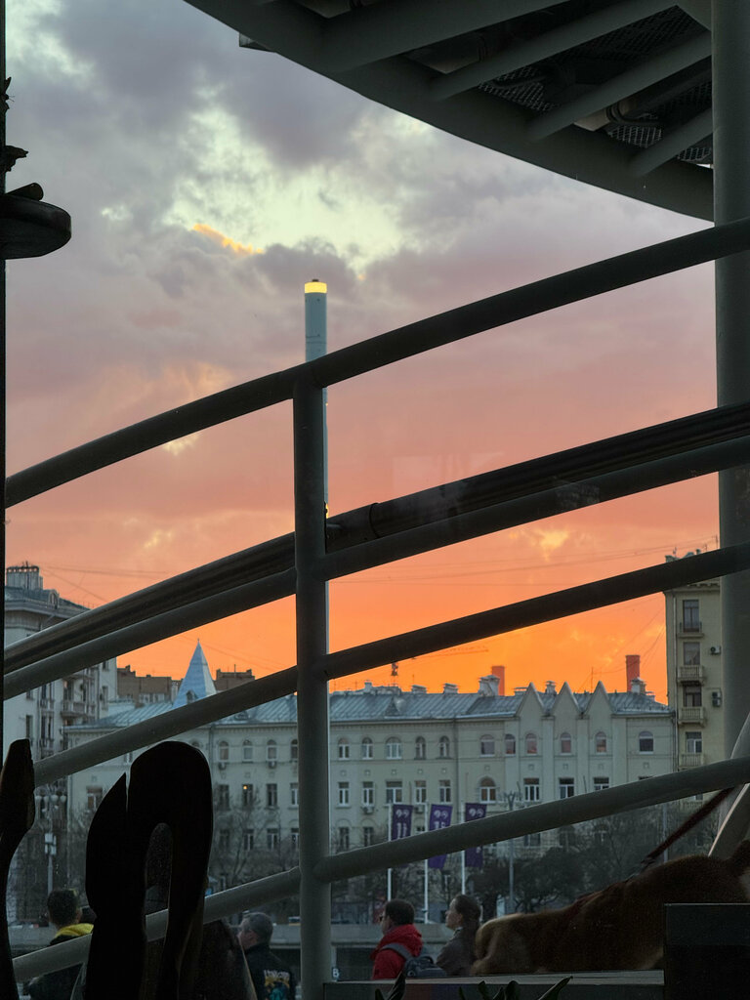

Азиатская кухня, тёплый свет, терраса над рекой и больше 9000 настоящих индонезийских артефактов в интерьере.
Ресторан, кафе и бар в одном месте: наси горенг, лумпия, лакса и авторские лимонады. Открытая веранда, кондиционер, Wi-Fi и мягкая музыка, под которую хочется задержаться.


Плетёные светильники, дерево и ротанг, вид на воду.






Отзывы с Яндекс Карт.
Интерьер впечатляет: больше 9000 настоящих индонезийских артефактов, ощущение, будто перенёсся на Бали, не выезжая из Москвы.
Классная локация. Еда вкусная, напитки отличные, музыка ненавязчивая.
Оставьте данные — администратор подтвердит бронь по телефону.